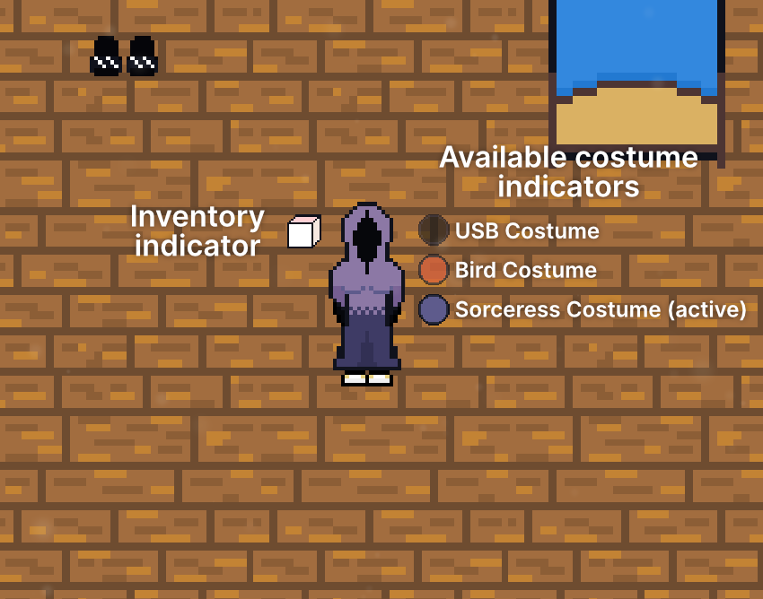

The Costumemaster is a puzzle game where you switch between costumes and activate different input devices to open the exit door and leave each level.
In each level of The Costumemaster, the player must successfully be able to reach the exit door. The exit door must be opened by a set of inputs that must be activated. In some scenarios, the player may need to switch between different costumes to unlock different abilities.
The Costumemaster uses multiple keys to perform actions in the game. These keys can be changed any time by visiting the Controls tab in the game's preferences.
Below is the list of controls using the default keys.
| Key | Control or action |
|---|---|
| W | Move the player upward. |
| A | Move the player left. |
| S | Move the player downward. |
| D | Move the player right. |
| E | Pick up/drop object, activate an input. |
| F | Switch to the next available costume in the queue. |
| G | Switch to the previous available costume in the queue. |
| C* | Deploy/retract clone. Requires USB costume to be worn. |
*This key cannot be changed in Preferences.
The Costumemaster displays a heads-up display (HUD) around the player to indicate when an item has been picked up or what costume the player is wearing.
In the core game of The Costumemaster, there are three costumes that the player can switch to at any given moment: